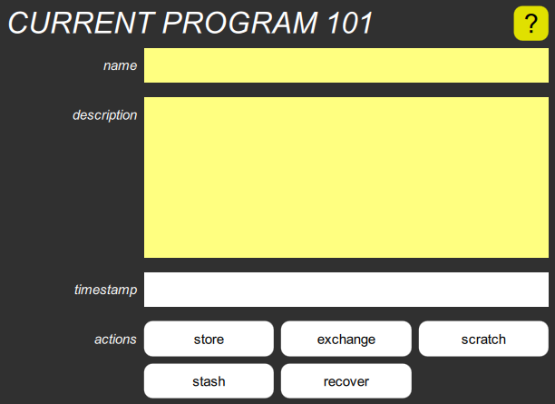

Current Program popup

This pops up when you long-press the Program Info button, and shows:
- The optional program name
- The optional description
- The program’s timestamp
- Five action buttons
As with all popups, you can dismiss it by clicking or tapping in the dimmed area around it, or on its title.
The name can be modified by clicking or tapping within the name box, and using the keyboard to edit the name. Press Enter to accept the new name, and you’ll see the timestamp change to the present.
This only changes the current program. To keep the change, you need to use the “store” button, below.
The description can be modified in a similar manner. Since this may have multiple lines, Enter starts a new line, but two Enters at the end accepts the change.
The timestamp shows when the program was created or most recently modified, with 100μs resolution.
Timestamps allow the Digital Chroma to know immediately if two programs are the same, without comparing all the parameters.
The “store” button stores the program under its current number.
You can always use the Undo button in the Navigation bar if you do this by mistake.
The “exchange” button exchanges the program with its stored version.
Exchanging them repeatedly while playing allows you to compare them easily, which is why this button doesn’t dismiss the popup. You can keep track of which is which by looking at the timestamps.
The “scratch” button resets all parameters to their default values, and deletes the name and description.
A scratch program doesn’t have a timestamp until you begin to edit it.
The “stash” button stashes a copy of the current program, and the “recover” button recovers it. Since stashing occurs in the Toolkit, and not in the Digital Chroma, it isn’t undoable, but it also has no effect on undo/redo.
This means that you can go back in time with Undo, stash that earlier program, Redo back to the “present”, and then recover and store that program. If you had used Undo to get back to that earlier program, and immediately stored it, all the Redo information would have been lost, and you wouldn’t be able to get back to the “present”.
Hotkeys
Pressing L on the keyboard reloads the current program, discarding any edits. Pressing S stores it under its current number.
These obviously don’t work while you’re typing into the name or description fields.